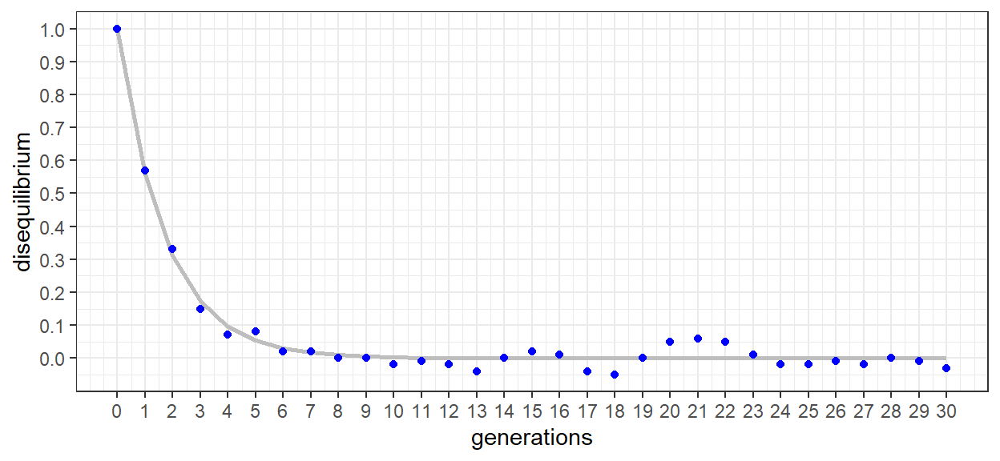

Chapter 2 Linkage disequilibrium
2.1 Introduction
When considered independently, individual loci can reach equilibrium after one generation of random breeding. However, when considered jointly, the number of generations needed for two or more loci to reach equilibrium depends on the recombination frequency, and as such, the physical map positions of the loci themselves. Here, a brief genetic simulation is performed to demonstrate the relationship between physical map position, recombination frequency, and linkage disequilibrium.
2.2 Getting started
AlphaSimR was used to perform the simulation. Tidyverse tools were used for general data wrangling, manipulation, and plotting.
2.3 Development of the populations
Highly simplified genomes were simulated to observe the interaction between physical map location, recombination frequency, and linkage disequilibrium. The populations are generally based on ‘end of chapter’ problem 1.10. Individuals possess a single chromosome of 1 Morgan in length. The chromosome consists of 10 segregation sites with loci spaced 0.1 Morgans apart. Two distinct populations were made. pop_ABC is homozygous for all 1 alleles and pop_abc is homozygous for all 0 alleles. 1000 haplotypes, or 500 diploid individuals, were simulated for each population. Sexes were set systematically such that each population consists of 250 females and 250 males. The code specifying each population and the genetic map of a representative individual are shown below. Rows in the genetic maps specify the two gamete possibilities of individuals 1 and 501. Columns specify each of the 10 loci of the single chromosome genome of the individuals.
pop_ABC <- newMapPop(genMap = list(seq(0, 1, length.out = 10)),
haplotypes = list(matrix(0, nrow = 1000, ncol = 10)))
SP <- SimParam$new(pop_ABC)
SP <- SP$setSexes("yes_sys")
pop_ABC <- newPop(rawPop = pop_ABC, simParam = SP)Ind/Hap | loc_01 | loc_02 | loc_03 | loc_04 | loc_05 | loc_06 | loc_07 | loc_08 | loc_09 | loc_10 |
|---|---|---|---|---|---|---|---|---|---|---|
1_1 | 0 | 0 | 0 | 0 | 0 | 0 | 0 | 0 | 0 | 0 |
1_2 | 0 | 0 | 0 | 0 | 0 | 0 | 0 | 0 | 0 | 0 |
pop_abc <- newMapPop(genMap = list(seq(0, 1, length.out = 10)),
haplotypes = list(matrix(1, nrow = 1000, ncol = 10)))
pop_abc <- newPop(rawPop = pop_abc, simParam = SP)Ind/Hap | loc_01 | loc_02 | loc_03 | loc_04 | loc_05 | loc_06 | loc_07 | loc_08 | loc_09 | loc_10 |
|---|---|---|---|---|---|---|---|---|---|---|
501_1 | 1 | 1 | 1 | 1 | 1 | 1 | 1 | 1 | 1 | 1 |
501_2 | 1 | 1 | 1 | 1 | 1 | 1 | 1 | 1 | 1 | 1 |
After specifying the two populations they were merged and crossed into a single ‘founder’ population. The function randCross was specified to perform 500 crosses each producing two offspring. This ‘idealized’ scenario results in 1000 offspring, the same number as the parent generation. Because the crosses are done at random and there are both females and males homozygous for both alleles, the founder population is a mixture of homozygous and heterozygous individuals.
POP_m <- mergePops(list(pop_ABC, pop_abc))
POP_f <- randCross(pop = POP_m,
nCrosses = 500,
nProgeny = 2,
balance = TRUE,
parents = NULL,
simParam = SP)With the founder population specified 30 generations of random mating were simulated. First, a vector in the form of a list was made to a length of generations + 1. The founder population was then added as the first entry of the list. Next, a for loop was created to walk forward the generations using the randCross() function. As performed for the founders, each generation ‘replaced’ the 1000 individuals of the previous generation through 500 crosses, each resulting in two full sibs. Each population was stored sequentially in the vector POP.
POP <- vector(length = 31, mode = "list")
POP[[1]] <- POP_f
for (i in 2:31) {
POP[[i]] <- randCross(pop = POP[[i - 1]],
nCrosses = 500,
nProgeny = 2,
balance = TRUE,
parents = NULL,
simParam = SP)
}With all the populations stored, the haplotypes were needed for the analysis. A function was created acquire the happlotypes from each generation, add a few qualifiers, and wrangle them into a data frame for row binding and downstream analysis. At its core is the pullSegSiteHaplo() function which produces an ‘individual + haplotype’ x ‘chromosome + segregation site’ matrix. Here, the segregation sites were first renamed. The ‘individual + haplotype’ rownames were then made into separate columns. Finally, the generation number was added such that the founders were considered generation 0. Once the function was created, lapply was used to create a data frame for each of the 30 generations simulated. By placing the lapply under the command of rbind within do.call, the 30 data frames were returned as a single data frame.
F_haps <- function(gen){
data.frame(pullSegSiteHaplo(pop = POP[[gen]], haplo = "all")) %>%
rename_with(~paste('loc', str_pad(1:10, 2, pad = "0"), sep = '_')) %>%
rownames_to_column('IG') %>%
separate(IG, c('IND', 'HAP'), '_') %>%
mutate(GEN = gen - 1)
}
df_haps <- do.call(rbind, lapply(1:31, FUN = F_haps))2.4 Un-linked loci
With the haplotypes in order, we first looked at two loci that should be un-linked, or in ‘linkage equilibrium’. Loci 2 and 9 were chosen as an example. If we recall from introductory genetics, rather than being a measure of physical distance (NB: base pairs), Morgans are a measure of recombination frequency. As such, the Morgans in which the simulated genome was developed are equivalent to the recombination frequency variable ‘c’ in the text. If we recall from the text, recombination frequencies have a maximum value of 0.5. At this value, the loci are un-linked and segregate as if on separate chromosomes. Loci 2 and 9 are 0.7 Morgans distant from one another and as such should exhibit a recombination frequency approaching 0.5. The exercise was designed to be repeated by simply specifying different loci as shown below. All loci combinations greater than 0.5 Morgans distant from one another should exhibit recombination frequencies near to 0.5.
With the loci specified, take a close look at the following code. We start with the haplotypes data frame and select only the generation and specified loci columns. We then grouped the data by generation and summarized the gene frequencies of the specified loci. Because alleles are labeled as 0s and 1s the frequency of the 1 allele can be achieved by summing all rows and dividing by the total number of rows. The across function was used here to perform the operation on all columns (other than the grouping column). This simply makes the script adaptable to other loci combinations. Once the 1 allele frequencies were calculated for each generation, they were designated as pA (0) and pB (1) to conform with table 1.5 from the text. qA and qB were then calculated with the knowledge that p + q = 1. With the gene frequencies calculated, r, s, t, and u equilibrium frequencies were calculated according to table 1.5. The first few generations of the data frame are shown for reference.
df_haps_1 <- df_haps %>%
select(GEN, loc_A, loc_B) %>%
group_by(GEN) %>%
summarise(across(where(is.numeric), sum)/n()) %>%
mutate(pA = 1 - !!as.name(loc_A),
qA = !!as.name(loc_A)) %>%
mutate(pB = 1 - !!as.name(loc_B),
qB = !!as.name(loc_B)) %>%
select(GEN, pA, qA, pB, qB) %>%
mutate(r_eq = pA * pB,
s_eq = pA * qB,
t_eq = qA * pB,
u_eq = qA * qB) %>%
round(., 2)GEN | pA | qA | pB | qB | r_eq | s_eq | t_eq | u_eq |
|---|---|---|---|---|---|---|---|---|
0 | 0.50 | 0.50 | 0.50 | 0.50 | 0.25 | 0.25 | 0.25 | 0.25 |
1 | 0.50 | 0.50 | 0.49 | 0.51 | 0.25 | 0.25 | 0.25 | 0.25 |
2 | 0.51 | 0.49 | 0.51 | 0.49 | 0.26 | 0.25 | 0.25 | 0.24 |
3 | 0.53 | 0.47 | 0.51 | 0.49 | 0.27 | 0.26 | 0.24 | 0.23 |
4 | 0.54 | 0.46 | 0.52 | 0.48 | 0.28 | 0.26 | 0.24 | 0.22 |
5 | 0.52 | 0.48 | 0.52 | 0.48 | 0.27 | 0.25 | 0.25 | 0.23 |
If we look at the data we see that each row is a generation and we now have the gene frequencies of both alleles for the two loci and the their expected equilibrium gamete frequencies. If we again turn to table 1.5 we find that rows 2 and 4 have been calculated. The main difference being that we have done this for 30 generations rather than just 1. It is a bit cumbersome in ‘wide format’ but useful to visualizing each step in the calculations. The following script continues by first adding rows 5, the actual gametic frequencies, to the table. The differences from equilibrium (row 6) are then determined before calculating both D and Dmax. A more thorough description is provided below .
df_haps_2 <- df_haps %>%
select(GEN, loc_A, loc_B) %>%
mutate(GAM_gt = case_when(!!as.name(loc_A) == 0 & !!as.name(loc_B) == 0 ~ 'r',
!!as.name(loc_A) == 0 & !!as.name(loc_B) == 1 ~ 's',
!!as.name(loc_A) == 1 & !!as.name(loc_B) == 0 ~ 't',
!!as.name(loc_A) == 1 & !!as.name(loc_B) == 1 ~ 'u')) %>%
group_by(GEN, GAM_gt) %>%
summarize(FREQ_obs = n() / 2000) %>%
group_by(GEN) %>%
spread(key = GAM_gt, value = FREQ_obs) %>%
replace(is.na(.), 0) %>%
merge(., df_haps_1, by = 'GEN') %>%
select(GEN, pA, qA, pB, qB, r_eq, s_eq, t_eq, u_eq, r, s, t, u) %>%
mutate(Dr = r - r_eq,
Ds = s - s_eq,
Dt = t - t_eq,
Du = u - u_eq) %>%
mutate(D = (r*u) - (s*t)) %>%
mutate(Dmax = ifelse(s_eq <= t_eq, D / s_eq, D / t_eq)) %>%
round(., 2)GEN | r | s | t | u | Dr | Ds | Dt | Du | D | Dmax |
|---|---|---|---|---|---|---|---|---|---|---|
0 | 0.50 | 0.00 | 0.00 | 0.50 | 0.25 | -0.25 | -0.25 | 0.25 | 0.25 | 1.00 |
1 | 0.39 | 0.11 | 0.11 | 0.39 | 0.14 | -0.14 | -0.14 | 0.14 | 0.14 | 0.57 |
2 | 0.34 | 0.17 | 0.17 | 0.32 | 0.08 | -0.08 | -0.08 | 0.08 | 0.08 | 0.31 |
3 | 0.31 | 0.21 | 0.20 | 0.28 | 0.04 | -0.05 | -0.04 | 0.05 | 0.04 | 0.19 |
4 | 0.30 | 0.24 | 0.22 | 0.24 | 0.02 | -0.02 | -0.02 | 0.02 | 0.02 | 0.08 |
5 | 0.28 | 0.24 | 0.24 | 0.24 | 0.01 | -0.01 | -0.01 | 0.01 | 0.01 | 0.03 |
The code is a bit complicated, especially if your new to R programming. It begins with the haplotype data frame and again we selected only generation and the two loci of interest. A column denoting actual gametic types, or gam_gt was then added be defining a number of ‘cases’. The cases relate to an individual’s combination of alleles at the specified loci. For example, 0 at loc_A and 0 at loc_B equates to ‘r’. The designations correspond to the gametic type in row 3 of table 1.5.
With r, s, t, and u specified the data was grouped by generation and gametic type to determine the frequency of gametic types in each generation. This was performed by simply taking the number of each type and dividing by 2000, as there were 4 gametic types x 500 individual in each generation. NA values were replaced with 0s and the data frame was converted to wide for merging with the gene and gametic equilibrium frequencies. The select function was used again to get everything in the right order for presentation. The disequilibrium was then determined for each gametic type, and the total disequilibrium calculated using the equation D = ru - st.
In calculating Dmax, values are normalized to the lesser of the repulsion heterozygote equilibroum frequencies. In this way, the largest possible value of D is achieved. The values also correspond to figure 1.3 and equation 1.5. The following code applies the simulated data to both the equation and the figure. First, the nls function is used to fit equation 1.5 to the data. Then Dmax as a function of generation is plotted graphically. Actual data is shown in points, and modeled data as a line. A summary of the model is also provided to observe the fit and predict recombination frequency (c).
mod_unlinked <- nls(Dmax ~ 1 * (1 - c)^GEN, data = df_haps_2, start = list(c = 0.5))
df_haps_2 %>%
ggplot() +
geom_line(aes(x = GEN, y = predict(mod_unlinked)),
size = 1, color = 'grey') +
geom_point(aes(x = GEN, y = Dmax),
color = 'blue') +
xlab('generations') +
ylab('disequilibrium') +
scale_x_continuous(breaks = seq(0, 30, by = 1)) +
scale_y_continuous(breaks = seq(0, 1, by = 0.1)) +
theme_bw()## Warning: Using `size` aesthetic for lines was deprecated in
## ggplot2 3.4.0.
## ℹ Please use `linewidth` instead.
## This warning is displayed once every 8 hours.
## Call `lifecycle::last_lifecycle_warnings()` to see where
## this warning was generated.
The plot of disequilibrium as a function of generation looks very similar to the c = 0.5 series of figure 1.3 in the text. When presented as Dmax, disequilibrium is 1 in generation 0 and then declines sharply. After 5-6 generations equilibrium has been reached and Dmax oscillates around 0. The slight oscillation is error as a result of the data being determined from simulated genomes and populations. The error can actually be increased/decreased through increases/decreases to the population size. This, however, is a topic of importance for later chapters.
##
## Formula: Dmax ~ 1 * (1 - c)^GEN
##
## Parameters:
## Estimate Std. Error t value Pr(>|t|)
## c 0.43995 0.01049 41.95 <2e-16 ***
## ---
## Signif. codes: 0 '***' 0.001 '**' 0.01 '*' 0.05 '.' 0.1 ' ' 1
##
## Residual standard error: 0.02114 on 30 degrees of freedom
##
## Number of iterations to convergence: 3
## Achieved convergence tolerance: 1.3e-06We can see from the gray line that despite some error, the model is a good fit for our points. In the summary, we can confirm that it was a ‘highly significant’ fit. We can also clearly see that the equation is the same as equation 1.5 from the text. For this exercise, we are also interested in the calculated value of c, the recombination frequency. Here, we find it to be ~ 0.465 which while not exactly 0.5 is suggestive of two ‘nearly un-linked’ loci.
2.5 Closely linked loci
After fair success observing un-linked loci, we can now turn our attention to loci in close proximity to one another. For this example, Loci 2 and 3 were chosen but the code was written to try out other combinations. Based on the map of our simulated genome, loci 2 and 3 are 0.1 Morgans apart. If everything went as expected, we should find a recombination frequency near to this value.
After specifying the loci, the code is actually identical to that for the un-linked example. As such, only the table of values, plot of D as a function of generation, and the model results are shown.
GEN | pA | qA | pB | qB | r_eq | s_eq | t_eq | u_eq | r | s | t | u | Dr | Ds | Dt | Du | D | Dmax |
|---|---|---|---|---|---|---|---|---|---|---|---|---|---|---|---|---|---|---|
0 | 0.50 | 0.50 | 0.50 | 0.50 | 0.25 | 0.25 | 0.25 | 0.25 | 0.50 | 0.00 | 0.00 | 0.50 | 0.25 | -0.25 | -0.25 | 0.25 | 0.25 | 1.00 |
1 | 0.50 | 0.50 | 0.51 | 0.49 | 0.25 | 0.25 | 0.25 | 0.25 | 0.48 | 0.02 | 0.03 | 0.47 | 0.22 | -0.22 | -0.22 | 0.22 | 0.22 | 0.90 |
2 | 0.51 | 0.49 | 0.52 | 0.48 | 0.26 | 0.25 | 0.25 | 0.24 | 0.46 | 0.05 | 0.06 | 0.44 | 0.20 | -0.20 | -0.20 | 0.20 | 0.20 | 0.80 |
3 | 0.53 | 0.47 | 0.53 | 0.47 | 0.28 | 0.25 | 0.25 | 0.22 | 0.46 | 0.07 | 0.07 | 0.40 | 0.18 | -0.18 | -0.18 | 0.18 | 0.18 | 0.73 |
4 | 0.54 | 0.46 | 0.53 | 0.47 | 0.29 | 0.25 | 0.25 | 0.22 | 0.44 | 0.09 | 0.09 | 0.37 | 0.16 | -0.16 | -0.16 | 0.16 | 0.16 | 0.63 |
5 | 0.52 | 0.48 | 0.53 | 0.47 | 0.28 | 0.24 | 0.26 | 0.22 | 0.42 | 0.10 | 0.12 | 0.36 | 0.14 | -0.14 | -0.14 | 0.14 | 0.14 | 0.57 |
The complete table of values is shown for the first 5 generations. While there are a lot of numbers there, it can be useful to see them all together, For each generation we can see how the gene frequencies (pA…) are used to calculate the gamtetic equilibrium frequencies (r_eq…). The observed gametic frequencies are then derived from the haplotype data of the simulation. The disequilibrium for each gametic type (Dr…) is then calculated by subtracting the equilibrium from the observed gametic frequencies. Next, total disequilibrium (D) is calculated as Dr * Du = Ds * Dt. Finally, Dmax is calculated as D divided by the lesser of the observed repulsion heterozygote frequencies. In the first 5 generations, the decline in Dmax is clearly less than for the un-linked example.

The graphic more clearly illustrates the more gradual reduction in disequilibrium. As a reference, the un-linked model (c = 0.5) was included in the plot. Rather than reaching equilibrium in 5-6 generations, upwards of 25+ generations were required for loci 2 and 3. Linkage between the two loci is clearly present.
##
## Formula: Dmax ~ 1 * (1 - c)^GEN
##
## Parameters:
## Estimate Std. Error t value Pr(>|t|)
## c 0.111345 0.001392 79.99 <2e-16 ***
## ---
## Signif. codes: 0 '***' 0.001 '**' 0.01 '*' 0.05 '.' 0.1 ' ' 1
##
## Residual standard error: 0.01906 on 30 degrees of freedom
##
## Number of iterations to convergence: 5
## Achieved convergence tolerance: 1.425e-06As was the case for the un-linked model, the linked model also demonstrated a highly significant fit. An estimated recombination frequency of c = 0.111 was also very close to our anticipated value of 0.1. The two loci are clearly in linkage disequilibrium.
2.6 Conclusion
While the exercise was developed as a demonstration of disequilibrium and the derivation of its magnitude, it also indirectly validated the AlphaSimR software. AlphaSimR is indeed an extremely useful program to practitioners of population and quantitative genetics. In fact, we will make use of it throughout the entire course. As such, take a long look at the code behind the operations and run a few experiments yourself. First try a few different loci combinations and see if the recombination frequency aligns with the map distance In Morgans. If you’re more ambitious, change the population size and see how this effects the results (NB: model error). As alluded to previously, population size will be a re-occurring theme throughout the course so there is no time like the present to get started!